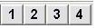

programma di selezione per ufficio tecnico
permette di selezionare un componente e di inserirne in automatico lo schema all'interno di un disegno autocad aperto.
La selezione avviene in una finestra di cui la figura di seguito rappresenta un esempio. Ogni volta che si seleziona un componente il programma ne visualizza il disegno.
La possibilità di inserire schemi all'interno di disegni autocad consente sia di velocizzare la fase di stesure dei layout da fornire al cliente unitamente all'offerta ma anche la fase di disegno esecutivo dell'impianto. Gli schemi vengono inseriti come blocchi e quindi, associando ai blocchi delle informazioni aggiuntive si può generare una lista parti in automatico.
|
 |
Permettono di selezionare quattro schemi differenti associati al componente ( per esempio le varie viste ). |
|
|
Inserisce lo schema visualizzato all'interno di un disegno autocad aperto. |